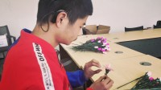

愿望清单

母亲节献花公益活动
妈妈是把孩子带到这个世界上来，又投入了全部身心来爱孩子的那个人。无论贫富，妈妈都是最伟大、最无私爱你的人。可是我们的文化是含蓄的、内敛的，很少向妈妈表达爱。每一个孩子，即使是身脑残疾的孩子，也是上天派来的天使，也是需要爱来滋养的生命。爱需要表达，爱需要流动。
详细信息 帮他圆梦非遗音乐救助行动
中华民族是一个有着五千年历史的文明古国，有着光辉灿烂的民族文化，传统音乐更是源远流长，创造了民歌、曲艺、戏曲等繁多的艺术珍品，并随着时间的冲刷不断得到提炼，为后人留下丰富的民族音乐文化遗产。据不完全统计，仅国家级的非遗，就有581项，包括民间音乐，传统戏剧，舞蹈，曲艺等。
详细信息 帮他圆梦微电影《位置》
2019年，珠海儿童保护协会将选取此社会问题，以微电影的形式进行公众意识宣导。 本片获得珠海市香洲区教育局、香洲区团委传播渠道及宣传渠道的支持，将组织各中学的学生们进行观看学习。 以微电影的形式传播，较易引起公众重视并预防校园欺凌事件的发生，也会提高公众对校园欺凌的认识，引发大家关注这一社会现象背后的成因、家庭教育的影响、以及校园欺凌与青少年心理健康的关系。
详细信息 帮他圆梦轮椅上的梦
他说风雨中这点痛算什么 擦干泪 不要怕 至少我们还有梦 他说风雨中这点痛算什么 擦干泪 不要问 为什么 当年这一首《水手》红遍了大江南北，残障歌手郑智化也唱出了所有身残志坚人的心声。
详细信息 帮他圆梦